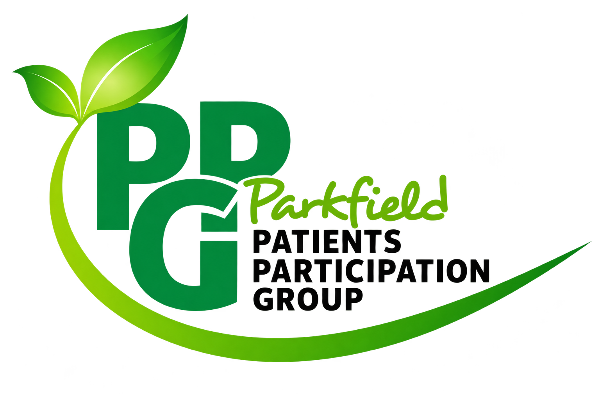

Connect with Parkfield PPG
Follow Parkfield Patient Participation Group for local health information, community updates and opportunities to have your say.

Follow Parkfield Patient Participation Group for local health information, community updates and opportunities to have your say.